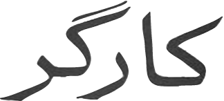

نشریه سوسیالیستی
تریبون آزاد مردم زحمتكش
دوره سوم، شماره 1، پاییز 1402
انزجار مردمان جهان از قتل عام بیسابقه حماس در جنوب اسرائیل:
نه به جنگ ارتجاعی و یهودی کُشی حماس؛ در دفاع از موجودیت اسرائیل

صحنه پس از کشتار بیش از 250 نفر توسط حماس در جشن سوپرنوا
جنگ نیابتی حماس: پرچم مذموم دولت شیعه در تهران برای استیلا بر منطقه خاورمیانه
برنامه سپاه و میلیشیاهای شیعه برای درهم شکستن طبقات کارگر در منطقه موفق نخواهد بود
* به حمایت تهران از حماس، حزب الله لبنان و میلیشیاهای شیعه پایان دهید. * برای همبستگی فلسطینی و یهودی، ایرانی و اسرائیلی.
* به برنامه نظامی هسته ای دولت شیعه پایان دهید. * برای خاورمیانه عاری از سلاح های هسته ای.
* برای خروج فوری میلیشیاهای ایران از سوریه، لبنان، وعراق. * برای خروج قوای نظامی واشنگتن از خاورمیانه.
* برای حمايت از اقليم كردستان در عراق.
* به حمایت دولت شیعه از تجاوز جنایت بار پوتین به اوکراین خاتمه دهید؛ از استقلال اوکرائین حمایت کنید.
برای تفکیک شیعه و دولت در ایران
برای استقرار رژیم دموکراسی
برای احترام به حقوق زنان، اقوام و ادیان
برای سازماندهی مستقل کارگران
برای سازمان یافتن حزب کارگر
برای استقلال سیاسی از بازار/سرمایه داری
برای استقرار حکومت کارگران و کشاورزان

خامنه ای در حمایت از پوگروم حماس: ما
دست های طراحان [این جنگ] و جوانان
فلسطینی را می بوسیم
خامنه ای در مراسم مشترک دانشآموختگی دانشجویان دانشگاههای افسری نیروهای مسلح پس از آغاز جنگ حماس
فهرست مقالات
نشريه سوسياليستى کارگر ( گاه نامه)
سردبير بابک زهرائى
Kargaronline.com
kargar.co
support@kargaronline.com
contact@kargaronline.com
براى مقالات و گفتگوهاى قبلى (ويدئو و صوتى) به اين آدرس رجوع كنيد :
babakzahraie.blogspot.com
babakzahraie@gmail.com
شماره بعدی کارگر نیز در فصل پائیز منتشر خواهد شد
نسل زن-زندگی-آزادی و مردمان ایران خواهان صلح و همبستگی با همه مردمان هستند و طرد یهود-اسرائیل-ستیزی را طلب می کنند

یهودی کُشی حماس در جنوب اسرائیل بزرگترین قتل عام یهودیان از زمان هولوکاست تا امروز (7 اکتبر 2023) را در مرکز توجه جهان قرار داده است.
در پوگرومِ فعلی، بیش از 1200 تن در جنوب اسرائیل که به زندگی عادی مشغول بودند قتل عام شدند و چندین هزار زخمی. با مقایسه ضریب جمعیت، این تعداد کشته معادل کشتار بیش از 10000 تن و ده ها هزار زخمی از مردم عادی به ضرب گلوله ظرف چند ساعت در ایران است. پوگرومی به این وسعت در تاریخ بی سابقه است. تنها یک قلم از عملیات حماس نازل شدن از هوا بوسیله گلایدرهای تفریحی و زمین (بوسیله برداشتن دیوارهای مرزی از طریق بولدوزر) در ساعات بامدادی برای کشتار بیش از 250 نفر شرکت کننده در یک جشن موسیقی سوپرنوا در نزدیکی مرز غزه است. قلمی دیگر قتل ده ها کودک و بزرگ سال در چند کیبوتس، دهکده های کشاورزی، و دزدیدن بیش از200 بچه و دیگر اعضاء خانواده ها در مجاورت مرز غزه است که از توابع کشورهای متعددی هستند . حماس طی این عملیات جنایات جنگی مفتخر است که جسد زن ساکن اسرائیل را که کشته اند، برهنه در خیابان ها گردانده و نمایش ضرب به جسد را اجرا کنند.
بیش و پیش از هر چیز دیگر، عملیات حماس و همراهان رهبری های نهضت های سیاسی فلسطین را در سراشیب بدترین سقوط فکری نشان می دهد. درباره عوام فریبی یهود-ستیزی تهران مردمان ایران می پرسند: تا کی می خواهی به این تبلیغات موهن ادامه دهی؟ مگر نه اینکه، قتل و خودکشی، در اسلام حرام است و مرتکبین به جهنم میرسند. مردمان سوال دارند چرا نباید برای فراهم آوردن امکان همکاری بر فراز تقسیمات و اختلافات ملی و دینی بر اساس احترام به حق وجود یهود تلاش کرد. چرا نباید برای حقوق متساوی و همکاری بین یهود، فلسطینی، برای تحقق آزادی و استقلال، همبستگی ملل ستمدیده، و احقاق حقوق اقوام و اقلیت های دینی تلاش کرد. این در حالی است که برخلاف تبلیغات سوء در اسرائیل سعی بر اتحاد یهودی و عرب می شود.

تحقق توام دو دولت یهود و فلسطین، به صورتِ دولت به هم پیوسته فلسطینی، راه حل اصولی و صحیح، با عدم محکومیت پوگروم حماس از سوی مسئول خودگردان فلسطین در کرانه باختری و دیگر جناح ها، به نظر می رسد که جناح های رهبری فلسطین از راه حل دو-دولت دیگر حمایت نمی کنند. برسمیت شناختن اسرائیل از سوی یاسر عرفات، رهبر سازمان آزادیبخش فلسطین، در 1993 صورت گرفت.
بدون برسمیت شناختن اسرائیل هیچ آینده ای برای جناح های فلسطینی، و حامیان آنان از ایران گرفته تا دیگران، قابل تصور نیست.
قبل از پوگروم، روزانه 1800 نفر از غزه برای کار به جنوب اسرائیل می آمدند. حماس از این دستاورد فلسطین برای برنامه ریزی پوگروم استفاده نمود. عاملین این جنایت وحشتناک سپس با تعداد بسیاری از ربوده شدگان، از اطفال تا سالخوردگان، به غزه متواری شدند.
با پیروزی حماس در انتخابات غزه (2006)، تعریف دروغین اسرائیل به عنوان دولت آپارتاید، و تعیین یهود-ستیزی به عنوان مشی حکومتی، نهضت رهائی فلسطین زیر ضرب این گروه ارتجاعی قرار گرفت. حماس مشکل اصلی فلسطینیان و نه راه حل آن بود—نهایتاً ساکنان غزه بر فراز کیلومترها تونل برای تامین نیازهای جنگ های ارتجاعی حماس علیه فلسطینیان و اسرائیل محبوس شدند و منازل آنان مورد استفاده شلیک پرتابه انفجاری به اسرائیل قرار می گیرد.
حماس می باید بطور یکجانبه به شلیک پرتابه های انفجاری به اسرائیل خاتمه دهد و کلیه انسان های ربوده شده را آزاد کند و موجودیت اسرائیل را برسمیت بشناسد. در غیر این صورت، برنامه جنگی حماس-تهران می تواند تا انهدام کامل حماس به قیمت کشته شدن تعداد بیشتری از یهودیان در اسرائیل و ساکنان غزه پیش رود. این واقعیت در مورد حزب الله لبنان نیز که به شلیک پرتابه های انفجاری علیه ساکنین اسرائیل متوسل می شود صادق است.
1- یهود ستیزی در جهان و ایران
کشتار حزن انگیز و شرم آور یهودیان، احسنت دریافت می نماید. یهود-ستیزی در جهان رو به افزایش است. ستم آوارگی فلسطینیان 70 سال قدمت دارد. ستم یهودیان قدمتی بسیار عمیق تر و طولانی تر را نشان می دهد. بیش از یک دهه پیش تر، حماس با بازی با کارت یهود-ستیزی برنده انتخابات شد (2006) و حکومت غزه را از آن خود کرد. نتیجه این مشی و برخورد ارتجاعی در یهودی کُشی های ناباورانه اخیر به نهایت خود رسید.
دربارۀ تاریخ طولانی ظلم به یهودیان: "یهودیان اولین کسانی بودند که با فئودالیسم رو به زوال حذف شدند، همچنین اولین کسانی بودند که توسط تشنج سرمایه داری در حال مرگ طرد شدند. توده های یهودی خود را بین سندان فئودالیسم در حال زوال و چکش سرمایه داری پوسیده می بینند."
تاریخ سرمایه داری نهضت حقوق مدنی یهودی را بسان نهضت پیروز حقوق مدنی سیاهان علیه نژاد پرستی در ایالات متحده (در دوران بعد از جنگ دوم جهانی) ندارد؛ لذا، یهود-ستیزیِ کشنده، گاه نهان و گاه عیان، بخشی از محاوره روزمره سرمایه داری جهانی است. چنانچه مشاهده می کنیم حماس، عاملین پوگروم، از سوی بسیاری، شامل وسائل ارتباطی، به عنوان "مقاومت" معرفی می شوند. اعلام روز "جهاد" توسط حماس، که پوگروم های بیشتر طلب می کند، از سوی وسائل ارتباط جمعی مرکزی در ایالات متحده روز "خشم" ترجمه شده و تِم تظاهرات در حمایت از حماس در ایالات متحده و دیگر نقاط دنیا است.
از زمان تاسیس اسرائیل، رانده شدن قریب 700000 فلسطینی و آغاز آوارگی فلسطینیان (1948)، حقوق ملت فلسطین دستاویز دول یهود-ستیز عرب که ابداً منافع فلسطین را در نظر نداشتند، شد. با استقرار دولت شیعه در ایران پس از انقلاب 57، همین شیوه سوء استفاده به کار گرفته شد. از سوی رژیمی که در ادامه مشی سلطنت استبدادی سابق دنبال استیلا بر منطقه خاورمیانه است. در بسیاری از کشورها، "چپِ" یهود-ستیز به تبلیغات دولت شیعه تهران-حماس دامن زده و آن را "مقاومت" نامیدند. در دفاع از "سیاست خارجی انقلابی" دولت شیعه سخن گفتند. چنانچه اردشیر زاهدی، از همراهان نزدیک شاه مخلوع، نیز همین موضع حمایت از جمهوری اسلامی را بیان داشت.
در ایران طیف وسیع سیاسی هیات حاکم از اصولگرا تا اصلاح طلب، تا پوپولیست و "چپ"، و پشت سر اینان مجموعه ساقط شده شاهی ها، عموماً در یهود-ستیزی اشتراک دارند. خلاف این برخورد در نوشتجات زنده یاد جلال آل احمد است که به اسرائیل سفر نموده و بکرات از آنچه می بیند در نوشتجاتش تمجید می نماید. یهود-ستیزی در ایران بیشتر یک محصول سیاسی وارداتی قرن بیستمی است و تاریخ قدیم آسیائی هم ایام حمایت از یهودیان و هم سرکوب آنان توسط حکام استبداد آسیائی را در نوبت های متفاوت دارد. قبل از انقلاب که استبداد سلطنتی، خود را قدرت مرکزی خاورمیانه به حساب می آورد و روابط نزدیک با اسرائیل داشت، نگاه هیات حاکم به اسرائیل به صورت زیردست خود بود و شاه، که طرز فکرش را از سال های مدرسه ابتدائی در اروپا کسب کرده بود یهود-ستیزی را در فرصت های متفاوت بیان می کرد.
پس از انقلاب 57، یهود-ستیزی به صورت مشی همگانی هیات حاکم ادامه یافت: برقراری دولت شیعه بر ارکان نظام سابق استوار است. حکومت بازار/سرمایه داری، در ادامه همان راه سابق، برای استیلا بر منطقه گام گذاشته و به اسرائیل-یهود-ستیزی به عنوان اصل سیاست حاکم با غلظت هرچه بیشتر توسل جستند؛ مشابه مواضع بعث عراق و بعث سوریه، و بسیاری دیگر از کشورهای عرب، بدان دامن زدند. این مشی کسب دوهدف در آن واحد را تعقیب می نماید: گسترش سیطره دولت شیعه در منطقه و از آن مهمتر، کنترل مردم در داخل، و تحمیل نظام سیاسی اختناق و خشونت با استفاده از یهود-ستیزی. همانند سوریه، که برای نسل های متمادی تحت سرکوب شدید بعث حافظ و بشار اسد به بهانه مبارزه با اسرائیل قرار داشت. درحقیقت، هیچیک از رژیم های سرکوبگر خاورمیانه ابداً همدرد نیازهای فلسطینی ها نبوده و نیستند و صرفاً بدنبال تحکیم سیاست محدود سازی امکانات و سرکوب طبقات کارگر در کشور خود می باشند.
سرکوب های سیاسی، علی الخصوص در ایام زن-زندگی-آزادی فرصت بیشتر داد تا نسل جوان، بر اساس تجربیات خود با یهود-اسرائیل-ستیزی دولت شیعه مخالفت نمایند. شعارهای نه غزه نه لبنان جانم فدای ایران طی سال های اخیر در ایران ظهور نمود. در پهنه خاورمیانه درمیان جمعیت سُنی عرب، به سبب سرکوب ها و جنایات دیکتاتوری اسد در سوریه، فهم نقش منفی اسرائیل-ستیزی برای میلیون ها بیش از دیگر کشورهای عرب روشن است.
یهودیان باید از این امکان برخوردار باشند تا برای فرار از یهود-ستیزی فزاینده در جهان سرمایه داری به اسرائیل پناه آورند. امکان تجدید هولوکاست نازی ها در قرن بیست و یکم میسر نیست. برنامه های دولت شیعه برای سرکوب طبقات کارگر در منطقه تحت لوای اسرائیل-ستیزی ناموفق خواهد بود: موجودیت دولت یهودی از میان رفتنی نیست.
2- زمینه وسیع پوگروم حماس وجنگ آوری دولت شیعه در تهران
پوگروم حماس به سبب روند عادی سازی روابط دول عرب با اسرائیل، که برنامه ریزی جنگی تهران در صدد مسدود کردن آن است، صورت گرفت. درست 4 روز پیش از قتل عام توسط حماس، خامنه ای (رهبر و فرمانده کل قوای نظامی دولت شیعه) در ملاقات با سفرای کشورهای اسلامی در تهران (3 اکتبر 2023) مخالفت با عادی سازی روابط با اسرائیل را مطرح کرد، "به اعراب هشدار "داد" رژیم صهیونیستی رفتنی است، دارند میمیرند، ریشهکن خواهد شد "و گفت" بر اسب بازنده شرط بندی نکنید".
با جنگ نیابتی حماس، تهران انتقامی از مردم فلسطین و مردمان خاورمیانه گرفت که در مقایسه با آنچه در تاریخ سوء استفاده دول یهود-ستیز عرب قبل از ظهور نهضت سیاسی مستقل فلسطین معمول می بود، بی سابقه است.
بعد از بلائی که تهران در حمایت فعال از جنگ دیکتاتوری بشار اسد (2012 به بعد)، تحت لوای دفع آیسیس، به سر سوریه آورد حالا نوبت فلسطین رسید. لیکن با قتل عام مردم معصوم یهود جای شک نیست که اینجا حماس و خامنه ای/دولت شیعه در تهران، چه به جنگ افروزی بیشتر در منطقه متوسل شده یا نشوند، بازنده اصلی هستند. جنگ های موفق ناپلئون شیعه که از 2012 بر خاورمیانه سایه افکند در اینجا برای اولین بار با مانع غیر قابل عبور روبرو گشته است. در راس این مانع مردمان ایران قرار دارند؛ اکثریت مردمان ایران از تبلیغات موهن یهود-اسرائیل-ستیزی دوری می کنند و طعم آن را در سرکوب های جمهوری اسلامی چشیده اند.
دولت شیعه و حامیان آن، اعلام نموده اند که در یک قدمی ساختن بمب اتمی هستند. لیک، برگزاری هولوکاست قرن 12، بوسیله بسط یهود-ستیزی در جهان، میسر نیست. برنامه های نظامی دولت شیعه در تهران برای سیطره بر خاورمیانه، به سبب سلسله عوامل متعدد تاریخی، از میان رفتن استالینیسم، عدم توانائی حکومت بازار/سرمایه داری در شکست طبقه کارگر ایران، از شانس موفقیت برخوردار نمی باشد. اجماع هیات حاکمه ایران در یهود-ستیزی عامل تعیین کننده نیست. آلمان در دهه 1930 از طریق مشی ضد انقلابی استالینیسم امکان شکست طبقه کارگر، اکثریت جامعه، و تفوق نازیسم، اقلیت ناچیز، را یافت. آن قضایا و امکانات برای ضد انقلاب از تاریخ رخت بسته است.
در همسایگی ایران، تجاوز ارتجاعی پوتین به اوکرائین (24 فوریه 2022)، چارچوب بین المللی مابعد جنگ دوم جهانی تحت امرِ واشنگتن را شکست. با آغاز این جنگ و تهاجم علیه استقلال اوکرائین، یهود-ستیزی را در دنیا و یهودی کُشی در خاورمیانه از سوی حماس را تشویق نمود. تبلیغات معمول مطبوعات دولت شیعه در ایران، بر یهودی بودن رئیس جمهور اوکرایین به عنوان دلیل رد استقلال طلبی اوکرایین انگشت می گذارند. خامنه ای فرصت اعلام حمایت کامل از تجاوز نظامی پوتین را طی ملاقات با وی (22 ژوییه 2022) از دست نداد.
اگر بیش ازچهار دهه پیش صدام حسین، با پشتیبانی واشنگتن، یکه تاز جنگ علیه ایران وجود داشت؛ پس از تجاوز پوتین به اوکرائین جنگ دول نیمه-مستعمره برای سیطره منطقه ای بیش از گذشته باب شد. چین منافع خود را در گسترش سیطره منطقه شرق آسیا/اقیانوس آرام می بیند—دولت شیعه در تهران، گسترش سیطره اش را در خاورمیانه دنبال می کند. از ترکیه تا عربستان هرکدام بر گسترش سیطره محلی خود تاکید داشته و میدارند. هرکدام به دنبال یارگیری به نفع خود می گردند. در ایران امروزه اسم این را گذاشته اند محور سه گانه روسیه-چین-ایران؛ که در دو بخش از این اتحاد سه گانه، یعنی روسیه (اوکرائین) و ایران (اسرائیل)، به همین زودی عدم شانس موفقیت آن روشن است. ایجاد پیمان های نظامی منطقه ای علیه واشنگتن سوای تحمیل هزینه های میلیارد دلاری تسلیحاتی به مردمان زحمتکش و ترویج فقر سرآبی بیش نیست—راه پیشروی و دفاع از دستاوردهای مردمان سازماندهی وعمل مستقل طبقات عام شهر و روستا است و نه برنامه تسلیحات دولت شیعه در تهران. بسط روابط اقتصادی صلح آمیز با همه کشورهای جهان مسیر پیشنهادی صحیح برای خدمت به منافع مردم است.
علیرغم تضعیف موقعیت واشنگتن، ایالات متحده کماکان قدرت اول نظامی منطقه خاورمیانه و جهان است و قابل جایگزینی از سوی پیمان های دیگر دول امپریال یا حکومت های نیمه-مستعمره نیست. راه پیشرفت و عزت، گسترش دموکراسی، سازماندهی مستقل طبقات عام شهر و روستا، جهت کسب استقلال و آزادی است و نه یهود-ستیزی و جنگ طلبی دولت شیعه در تهران.
3- روند تضعیف موقعیت واشنگتن-امپریالیسم به سبب فروپاشی اتحاد شوروی
وقایع سه دهه اخیر در خاورمیانه ضعف موقعیت واشنگتن-امپریالیسم را نشان می دهد؛ و در جریان تجاوز نظامی پوتین به اوکرائین به طرزی بارز هویدا است. ضعف موقعیت واشنگتن از زمان فروپاشی شوروی فزون می یابد:
در آستانه آخرین دهه قرن بیستم، با فروپاشی اتحاد شوروی (دسامبر 1991) موضع امپریالیسم تحت هدایت واشنگتن تضعیف شد. کارت برنده امپریالیسم از زمان انحطاط شوروی در اواخر دهه 1920، یعنی استالینیسم،از سوی مردمان روسیه از میان برداشته شد. از این موقعیت ضعف، واشنگتن با بهره گیری از عمل جنایت بار 9-11 در 2001، به اشغال افغانستان و سپس عراق مبادرت ورزید. این عملیات کشورگشائی دو کشور نهایتا بعد از یک دهه در عراق و دو دهه در افغانستان به شکست انجامید. بغداد تحویل میلیشیای شیعه شد. کابل به طالبان بازگشت. سرنوشت دوکشوری که از سوی واشنگتن اشغال شدند نامعلوم باقی ماند. موقعیت بین المللی واشنگتن بیش از پیش تضعیف شد.
دولت شیعه در تهران از بهم ریختگی ناشی از جنگ های واشنگتن در افغانستان و عراق استفاده نموده با میلیشیای شیعه و صرف ده ها میلیارد دلار (درخواست د.ش. از سوریه 63 میلیارد بازپرداخت هزینه های جنگی اش است)—برای سرکوب خیزش مردمان سوریه و حفظ دیکتاتوری بشار اسد—تحت لوای دفع "داعش"، با حمایت ضمنی قدرت های امپریال وارد عمل شد. طبل جنگ طلبی قوای نظامی دولت شیعه در تهران و شبه حکومت های منطقه، حکومت های بازار/سرمایه داری برای از میان برداشتن اسرائیل پر صدا تر شد و تعداد موشک های میلیشیاها، شیعه (و حماس) هزاران برابر شد. میلیاردها دلار در خزائن مالی ایران به تسلیحات نظامی، سازوبرگ دو قوای نظامی، سپاه پاسداران تشکیل شده از سوی بازار و قوای نظامی بجا مانده از سلطنت، و جنگ هایش در خاورمیانه اختصاص یافت. گرانی، فقر و بیکاری در ایران چند برابر شد و سطح زندگی اکثریت مردم نزول کرد و سرکوب سیاسی دولت شیعه تشدید شد.
4- ناکامی مشابه تجاوز قدرت های دولتی و شبه دولتی به حاکمیت مردمان
در امتداد ضعف امپریالیسم ناکامی آکتورهای دولتی و شبه-دولتی، گردنکشان محلی، در کشورهای نیمه-مستعمره را در تجاوز به حقوق مردمان مشاهده می کنیم. کسب حق تعیین سرنوشت ملل که با انقلاب اکتبر 1917 که به استقرار عظیم ترین تعداد جمهوری های جدید، منجمله، اوکرائین انجامید، سرفصل تاریخ جدید بشریت است و از میان برداشتنی نیست. جای تعجبی نیست: همان طور که پوتین در تجاوزِجنایت بارش بدون کسب اهداف از میان برداشتن استقلال اوکرایین فشل مانده است، حماس با یهودی کُشی به انتهای خط خود نزدیک می شود.
خاورمیانه حقیقت ضعف قدرت های سرمایه داری، اعم از امپریال یا نیمه-مستعمره را، به درجات متفاوت، در نوبت های قبلی جنگ های ارتجاعی حماس و دیگر آکتورهای دولتی و نیمه دولتی تجربه کرده است و گردنکشان محلی قادر به کسب عواید از لشگرکشی های خود نبوده و موفقیت های آنان گذرا است:
گروه آیسیس—ائتلاف بقایای بعث و افراطیون سنی—در سال های 2014 تا 2019 سرزمین های زیادی را فتح کرد و به آدمکشی و تجاوز و برده گیری دختران و زنان دست زد؛ حامیانش در فرانسه دست به کشتن یهودیان، شرکت کنندگان در سالن کنسرت و نویسندگان یک مجله فکاهی زدند و مالا گردن کشی آن دوام نیاورد. حماس می تواند با یهودی کُشی قبلی ها را رو سفید کند ولی آینده ای به غیر از ناکامی ندارد.
دیگر نمونه بارز این حقیقت دخالت نظامی موفق د.ش. در سوریه است که خیزش مردمان سوریه را با بمباران های نیروی هوائی روسیه و حمایت ضمنی قدرت های امپریال سرکوب نمود. کدام قدرت "مترقی"، الا دیکتاتوری بشار اسد، کشور خودش را با کمک میلیشیاهای تهران، صرف ده ها میلیارد دلار، و نیروی هوائی مسکو تکه پاره نموده، علیه انقلاب مردمان خود به اسلحۀ شیمیائی متوسل شده و میلیون ها را آواره جنگی می کند! "پیروزی" دولت شیعه ایران، سرکوب انقلاب 2011 در سوریه، به قیمت نابود کردن بخش های عظیم تمدن بشری در این کشور میسر شد. میلیون ها آواره سوری جذب کشورهای هم جوار شدند. اتحاد ارتجاعی تهران-دمشق عایدی اقتصادی، اجتماعی و سیاسی پایدار نداشت.
در صورتی که به عقب تر برگردیم نتیجه جنگ های قرن بیست و یکم واشنگتن، شکست قدرت اقتصادی و نظامی اول در جهان، در اشغال نظامی افغانستان (2001-2012) و عراق (2003-2011) بود. به پیش تر که برگردیم جنگ صدام علیه کویت و طوفان صحرا (1990-1991) و قبل از آن علیه انقلاب در ایران (1980-1988) یا شکست خورد یا آخرالامر دست خالی ماند.
پیش تر، دخالت نظامی مسکو در افغانستان (دسامبر 1979 تا فوریه 1989) برای تحکیم حکومت اسلام-ستیزٍ "سکولار" در کابل نیز به شکست انجامید. این دخالت مهاجرت معکوس، از شهر به روستا، را به افغانستان تحمیل کرد. جمعیت روستاها ده برابر شد. جامعه افغان دچار نزولی ترن حالات تاریخ اش شد و به سیر قهقرائی ناشی از آن افتاد.
جنگ، تخاصم خونین بین شهر و روستا پذیرای دخالت قدرت های امپریال شده و سلطه روستا بر شهر جای وضعیت معمول برتری شهر بر روستا در چارچوب جامعه نیمه-مستعمره را گرفته و همکاری شهر و روستا را به طرزی بیسابقه مختل کرد. و این معضل تحمیلی، ناشی از دخالت نظامی شوروی، از میان اشغال نظامی واشنگتن، برای بیش از 4 دهه تا به امروز ادامه یافته و محور توسعه افغانستان را از لولا خارج کرده است. دخالت نظامی مسکو، هزینۀ انسانی و مالی آن، در فروپاشی اتحاد شوروی نقش بسزا داشت.
بیش از 4 دهه برنامه های دخالت نظامی قدرت های امپریال و آکتورهای دول نیمه-مستعمره در خاورمیانه برای پس زدن امکانات حق تعیین سرنوشت ملل تحت ستم یا شکست خورده و یا بجائی نرسیدند.
حقایق فوق، در ایران که تحول زن-زندگی-آزادی را پشت سر دارد (25 شهریور 1401، روز مرگ مهسا هاشمی در بازداشت دستگاه امنیتی)، بر اساس تجربه مستقیم توده وسیع مردم با دولت شیعه در تهران، و شیوه های سرکوب نظامی تحت لوای از میان برداشتن دشمن "صهیونیستی" بوسیله بسیج-پاسداران-پلیس-قوای انتظامی، در سال های اخیر از کشتار بی رحمانه در آبان 98، روشن است: مقابله دولت شیعه با اظهار وجود مستقل مردم علیه بالا رفتن بهای بنزین، گرانی، بیکاری، فقر، جنگ، و مخالفت با اِعمال تعدی و خشونت به حقوق زنان و اقوام.
حقایق فوق در نوبت خیزش زن-زندگی-آزادی با ادامه کشتن یا مصدوم کردن معترضین در خیابان ها از زاهدان تا مابقی ایران و بازداشت ده ها هزاران، و متعاقبا اعدام ده ها با اتهامات بی پایه وعفو ده ها هزار که زندان ها گنجایش حبس آنان را نداشتند، عفو 90000، خود را نشان داد؛ و در سالگرد زن-زندگی-آزادی احضاریه شفاهی/تلفنی برای همان تعداد بازداشت شدگان سال قبل به علاوه خانواده های آنان توسط اطلاعات سپاه برای حضور، بازجوئی و شنیدن تهدیدات سپاه پاسداران و دستگاه امنیتی صورت گرفت.
در عین حال تحرک زنان، جوانان، کارگران در صنعت و معادن، معلمان، بازنشستگان و اقشار زحمتکش، برای خواست هایشان در همبستگی با ملت ادامه می یابد. برای اولین بار بعد از دهه ها رهبران آزادیخواه، همانند مولوی عبدالحمید در زاهدان، خواست های عموم در رابطه با مسائل منطقه ای و داخلی را عنوان نموده و راه مذاکره مسالمت آمیز را تشویق می نمایند.
مشکلات لاینحل دولت شیعه که از حمایت اکثریت مردمان برخوردار نبوده و غالباً منحصر به پایگاه میلیونی نظامیان شیعه و طرفدارانشان می باشد، هویدا است.
5- فاجعه سیادت حکومت های بازار/سرمایه داری و نیاز به دستیابی به استقلال و آزادی برای جلوگیری از انهدام جمعی
حقیقت پایداری دولت یهود و آرمان های فلسطین به طور اخص، و آرمان های حق ملل ستمدیده به حق تعیین سرنوشت به طور اعم، از میان رفتنی نیست وخود را بیش از پیش نشان می دهد.
مجموعۀ گرایشات سیاسی بازار/سرمایه داری، چنانچه از غزه تا تهران مشاهده می کنیم، نمایندگان نیروی اجتماعی اصلی تاریخ نبوده و فاقد رسالت مستقل تاریخی می باشند–این واقعیت، همان طور که مشاهده می کنیم، امکانات آدمکشی و تخریب این قوای فرعی یا میانی را منتفی نمی کند. نیروی فرعی در هر قدم می بایست به یکی از نیروهای اصلی، یعنی امپریالیسم و طبقه کارگر، تکیه کند. حماس بدون این که در سطح جهانی مقاومت نامیده شود کاری از پیش نمی برد. یهود-ستیزی نهادینه تحت سرمایه مالی، به بهره گیری از آژانس های موجود نیاز دارد. تاریخ بیش از 70 سال مبارزه دول عربی با اسرائیل، نیاز تامین یهود-ستیزی در سیاست بین المللی از سوی قدرت های امپریال را نشان می دهد.
در ایران، امپریالیسم (و با آن ارتجاع سلطنتی منقرض شده) و طبقه کارگر نیروهای اصلی تاریخی هستند. به خاطر نزول موقعیت امپریالیسم و ضعف سازماندهی مستقل طبقه کارگر، سیاستمداران بازار فرصت می یابند تا صحنه سیاسی کشور را به خود اختصاص دهند. نیروهای اصلی تاریخ، یعنی امپریالیسم و طبقه کارگر، تعیین کننده حصول استقلال و آزادی، اولی مانع تحصیل و دومی بانی حصول، هستند. بازار و مجموعه فراوان سیاستمداران خرده بورژوای پیرامون آن، اعم از روحانی یا عادی، صحنه سیاسی را تنها به طور موقت در اختیار داشته، از امروز به فردا، بدون توانائی انجام دادن هیچ امر اساسی، حکومت می کنند—گرچه مدت زمان سیادت موقت اینان، تا سازمان یافتن مستقل طبقات عام شهر و روستا، می تواند کش آمده طولانی باشد: در غزه برای بیش از یک دهه، در ایران برای بیش از چهار دهه.
از پس پرده نمایش سنگدلی شریرِ حماس و یا سرکوب های مکرر و خونین دولت شیعه از آبان 1998 تا به امروز، ضعف گروه های سیاسی حاکمیت بازار، از غزه تا تهران، نمایان است. حکومت هائی که بیانگر و نماینده اکثر مردمان نیستند.
در این شرائط، حقیقت رویاروئی تاریخی امپریالیسم با طبقه کارگر و یارانش در میان طبقات عام شهر و روستا، و نیاز بکارگیری شیوه های سازمان یافتن مستقل و صلح آمیز انبوه مردمان، برجسته می شود. بکارگیری سنن طبقه کارگر جهانی ، ادامه راه نسل های پیشین، کسب وظائف تاریخی دموکراتیک یا سرمایه داری را تابان می کند.
خطر راندن جامعه مبتلا به عمیق ترین بحران های اقتصادی، اجتماعی، سیاسی و فرهنگی و جنگ طلبی دولت شیعه می تواند تمدن بشری در خاورمیانه را به ورطه نابودی در جنگ اتمی بیاندازد. اجتناب از تراژدی، دست توانای مردمان ایران برای کسب استقلال و آزادی را طلب می کند. در غیر این صورت برنامه نظامی اتمی ایران، که تا بدینجا مطابق اظهارات نمایندگان دولت شیعه تنها دست یابی به آن چند هفته زمان نیاز دارد، به سبب بحران های ناشی از سیادت دولت شیعه تشدید می گردد.
6- دولت شیعه در ایران: جلوگیری از تحقق خواست های تاریخی دموکراتیک بوسیله سرکوب های سیاسی و صرف منابع کشور برای جنگ ها و تسلیحات
هرکجا که سخن از عمل مردمان، طبقات عام شهر و روستا، به میان می آید تاریخ صحنه پیشرفت و ترقی است. همانند عمل انقلابی جهت آزادی ایران از ستم کمر شکن ارتجاع سلطنتی در 1357. به سبب این عمل تاریخی بندهای اسارت طبقات عام شهر و روستا سست شد. بی سوادی سیر نزولی یافت. دسترسی به تحصیلات دانشگاهی، با شرکت اکثریت دانشجویان مونث، ده برابر شد. فاصله ایجاد شده از سوی ارتجاع سلطنتی بین شهر و روستا تقلیل یافت. اقتصاد و اجتماع، سیاست و فرهنگ، مرهون عمل انقلابی مردمان شده و پربار شد. محیط سرکوب کارگران در کارخانه ها سست شد. کارگران توانستند قدم به جلو برداشته و درباره بهبود وضع خود صحبت کنند. دسترسی جمعیت کثیری از کشاورزان به زمین های کشاورزی شان میسر شد (علیرغم اجزائی از اصلاحات ارضی که کماکان لاینجل باقی مانده اند). ورود زنان به صحنه اجتماعی تقویت شد (علیرغم جلوگیری از اشتغال زنان توسط د.ش. و برنامه مداخله و خشونت آن علیه زنان). صدای اقوام، اقلیت های ملی، که تحت ارتجاع سلطنتی منکوب بود در جامعه شنیده شد(علیرغم جلوگیری د.ش. از تدریس زبان های مادری نیمی از جمعیت کشور). رشد انتشارات، ایجاد کتابخانه ها، هنر، موسیقی، نقاشی، و فیلم (علیرغم جلوگیری از آزادی بیان و تجمع، نشر و انتشار و خلاقیت هنرمندان و روشنفکران توسط د.ش.) حرکت بی سابقه یافت. هرچه پیشروی بود از حرکت انقلاب مردمان ایران بدست آمده و هرچه منفی و پس روی است از طریق دولت شیعه به کشور تحمیل شد.
با براندازی استبداد شاه "شیعه"، دولت شیعه به سبب ضعف سازماندهی مستقل طبقه کارگر و یاران کثیر آن در میان زنان، اقوام، اقلیت های دینی، کشاورزان، جوانان/دانشجویان، کسبه کوچک، صاحبین حرفه، هنرمندان و روشنفکران، جایگزین آن شده و این راه حل از سوی تمامیت هیات حاکم در ایران و قدرت های امپریال در خارج حمایت شد.
شیعه، همانند دیگر متاع موجود در بازار جهت محدود سازی و جلوگیری از آزادی بیان و تجمع از سوی سیاسیتمداران بازار به حکومت اطلاق شد. دولت بازار، نیروی تاریخی جامعه ایران نیست و ریشه گرایشات سیاسی آن به سلطنت های ارتجاعی تاریخ جدید از زمان انقلاب مشروطه در اوائل قرن بیستم باز می گردد. طرفداران دولت شیعه در زمان انقلاب واقعاً زیاد بودند، لیک حداکثر نه بیش از چند میلیون.
با ورود سرمایه داری به مملکت محروسه قاجار، از اواخر قرن 19 نیروی جدید بازار-سرمایه داری، که به لحاظ کِیفی با بازار در عهد های قدیم متفاوت است، به عنوان دلالان کالاهای قدرت های امپریال، در دامان سلطنت استبدادی رشد کرد. نمایندگان سیاسی آن نیز، اعم از غیر روحانی و روحانی، در دامن سلطنت رشد کردند. از اینجا، و تحت امر و جهت حفظ سلطنت، و با حمایت قدرت های استعمارگر همانند بریتانیا، محور سیاست حاکم در ایران پس از شاهِ "شیعه"، سیادت شیعه اعلام شد. از نائینی (دانشمند شیعه)، تا خمینی (آیت الله العظمی و بنیان گذار جمهوری اسلامی) اصول برتری شیعه در حکومت از انقلاب مشروطه تا انقلاب 1357 کم و بیش از سوی مجموعه سیاسی بازار تعریف شده، و توسط قدرت های امپریال تائید شد. آخوند-ستیزی نیز از همین منبع سلطنت ارتجاعی توامان ترویج یافت و پای ثابت سیاست حاکم شد.
در این میان از آنجا که خمینی در جریان خیزش انقلابی در سال 57 خُلف وعدۀ بازیِ محدود در زمین سیاسی سلطنت را کرده و با مردم برای سرنگونی سلطنت ارتجاعی هم صدا شده بود، به سرعت پس از انقلاب 1357، کلیه نیروهای موجود هیات حاکم و سلسله مراتب سیاسی بازار، اعم از غیر روحانی یا روحانی، که تماماً مخالف انقلاب بودند و قبل از آن عمدتاً از جمهوری اسلامی یا ولایت فقیه بی خبر بودند او را مسئول شمرده و یکصدا از او مقامی در حد شاه سرنگون شده آفریدند و به زبان ساده گفتند که حالا خودت "خرابی" انقلاب را درست کن. خیزش انقلابی مردمان وسیع بود و هیچکس دیگر برای کنترل آن وجود نداشت. بدین ترتیب تمامی هیات حاکم، استقرار دولت شیعه تحت فرمان خمینی را به عنوان تنها راه حل سعی بر جلوگیری از گسترش سازماندهی مستقل اکثریت مردمان ایران که عامل تاریخی پیروزی انقلاب بودند، اعلام کردند.
با پذیرا شدن خمینی (که به قم رفته بود تا به معنویات و علویات شیعه در حوزه علمیه بپردازد) از این نقش جدید، و ضعف سازماندهی مستقل طبقه کارگر، و تاثیرات خسران بار گرایشات خلقی-چریکی، وقایع تاریخی شد آن چه شد: مردمان ایران دست خالی ماندند و برقراری دولت شیعه همان طور که انتظار می رفت، و در بدو انقلاب در مناظره تلویزیونی که 22 میلیون آن را مشاهده کردند اعلام نمودیم، "وعده ای در ناکجا آباد" را به اجرا گذارد. فرصت حل وظائف تاریخی که جامعه ایران و مردمان آن می بایست حل کرده و از میان بردارند و عصر آزادی، استقلال را در منطقه بگشایند از دست رفت.
با سرنگونی سلطنت ارتجاعی در 57 ایران شاهد آزادی بیان، تجمع، و امکانات حضور و سازماندهی مستقل جوانان، زنان، کارگران، کشاورزان و مردمان در کشور شد. نشریه سوسیالیستی کارگر در کشور انتشار یافت. کتب انتشارات فانوس چاپ شد. درآغاز کار دولت شیعه به عنوان جمهوری اسلامی، یعنی قائل به نقش مردم، معرفی شد. به فاصله 4 سال، در زمستان 1361، حکومت بازار با همکاری قدرت های امپریال، همان طور که از بدو پیروزی انقلاب انتظار آن می رفت، به سرکوب گرایش سیاسی مستقل سوسیالیست دست زد. این عمل از طریق بخش اعظم مشروطه-مشروعه خواهان حاکم، یعنی طیف سیاسی اصلاح طلبان و اصولگرایان، هدایت شد. کارگر ممنوع الانتشار اعلام گردیده و صدها کتاب منتشر شده سوسیالیست ها از سوی حکومت خمیر شد. سخنگویان سوسیالیست بدون هیچ عمل مخالف قانون به صرف عقاید حبس و محاکمه شده و برای مدت های طولانی زندان را تحمل کردند.
تحت ارتجاع پهلوی، برای مدتی نمایش احزاب سیاسی متعلق به سلطنت اجرا می شد و این احزاب مورد تمسخر عموم بوده به صورت طنز احزاب "آری" و "مسلماً" لقب داشتند. زمانی که دلار های نفتی در اواسط دهه 70 میلادی به ایران سرازیر شد، تحمل احزاب فرمایشی برای سلطنت خودکامه مقدور نبود و نظام تک حزبی رستاخیز را اعلام کرد. با خاتمه جنگ عراق (1988) فصل رونق گرایشات سیاسی "آری" و "مسلماً" در جمهوری اسلامی (اصولگرا و اصلاح طلب)، گرایشات سیاسی بازار فرا رسید. حرکت بر ریل حکومتی سلطنت ساقط شده توسط دولت شیعه پس از مدتی بیشتر و بیشتر به ایستگاه منطقی خود، به همان نتیجه عدم تحمل گرایشات آری و مسلماً رسید. فصل تجدید حیات سیاسی مردمان از گرایشات سیاسی شناخته شده بازار گذشته و توسط زن-زندگی-آزادی بیان شد.
با تحمیل انحصار سیاسی بازار بر سیاست کشور، در کادر مرکزی جمهوری اسلامی بسیاری از کسانی که سرکوب آزادی بیان و تجمع، نشریه کارگر و انتشارات فانوس، را هدایت کرده یا با آن مدارا کردند با مرور زمان خود با محدودیت و حذف از صحنه سیاسی، تا حصر و زندان، کشورروبرو شدند. با ادامه مشی سلطه منطقه ای ارتجاع سلطنتی سابق از سوی دولت شیعه در جنگ سوریه، و بسط میلیشیای شیعه از عراق تا لبنان، زمانی که سیاستمداران دولت شیعه سخن از منطقه "ما" به میان آوردند، و عزم جنگ برای نابودی اسرائیل را کردند، بکار گیری شیوه های نظامی در سرکوب هرگونه اعتراض مستقل در میدان های اقتصادی، سیاسی و فرهنگی در کشور شدت یافته و باب روز شد.
طی 4 دهه از تاریخ ایران پس از انقلاب 1357، دولت شیعه به سبب نظامی گری و جلوگیری از حقوق سیاسی مردمان ایران، (رهبران دولت شیعه از مقاومت در برابر تجاوزنظامی عراق استفاده کردند تا صد ها هزار از نسل جوانان انقلاب 1357 را به دنبال اهداف نظامی صرف—در شرائطی که پرچم های آزادیبخش اجتماعی مردمان ایران در مقابل تجاوز نظامی کاملا حذف شده بود—در میدان های جنگ از میان ببرند و عصر مجددی برای قمار سرمایه داری تامین سازند) جلوگیری از طبع و نشر نظرات سیاسی مستقل سوسیالیستی، حبس طویل المدت سوسیالیست ها، کمترین نقش مترقی در جامعه ایران در کلیه میدان های اقتصادی، اجتماعی، سیاسی و فرهنگی ایفا ننموده است. این واقعیت عجیب نیست: سیادت دولت شیعه بر اساس حرکت بر ریل گذاری تعیین شده از سوی سلطنت-امپریالیسم، جلوگیری از سازمان یافتن مستقل طبقه کارگر، صورت گرفت.
زن-زندگی-آزادی نیاز به فهم حقیقت اساسی و اعلام تساوی کلیه ادیان در برابر دولت، استقرار اصل تاریخی جدائی کلیسا-دولت، که اصل جهان شمول استقرار دموکراسی است، را نشان داد. حقوق بنیادی زنان و اقوام، حقوق مدنی و سیاسی، از سوی سلطنت (پهلوی اول) بیش از یک قرن پیش سرکوب شدند. با انقراض سلطنت ارتجاعی (1357)، امکان کسب حقوق نامبرده پدیدار شد. نیاز به استقرار رژیم دموکراسی و کنار گذاردن مظاهر دولت شیعه که مانع تحقق حقوق بنیادی گردید ضروری است. در ایران، جدائی شیعه و دولت، و ختم تفوق شیعه بر دولت لازم است—استقرار حکومت دموکراتیک که متکی به آزادی های مدنی و سیاسی، حقوق زنان، اقوام، آزادی کلیه ادیان، سازماندهی مستقل کارگران و کشاورزان و کلیه صفوف طبقات عام شهر و روستا، اینک لازمه تضمین بقاست.
مردمان ایران با تفکیک شیعه و دولت، از دستاوردهای بشریت در تدوین اصول آزادی در عصر سرمایه داری بهره مند می شوند (از زمان بیانیه حقوق در اواخر قرن 18 در ایالات متحده). این دستاورد راه حکومت متکی به اصول آزادی و اکثریت مردم، آزادی زنان، اقوام و آزادی و تساوی کلیه ادیان در برابر دولت را از پاکستان تا اسرائیل نشان می دهند. سازماندهی مستقل کارگران، و یاران آنان در میان طبقات عام شهر و روستا، همگان با تفکیک شیعه و دیگر ادیان از اهداف سازمان هایشان، تامین وسیع ترین صفوف وحدت را میسر ساخته و سنگ بنای تفکیک شیعه و دولت را در جامعه پی ریزی می کنند.
فصل زن-زندگی-آزادی در تاریخ ایران اینک با نفی یهود-کُشی و یهود-ستیزی ارتقاء یافته است. امروزه به تکمیل انقلاب ضد سلطنت برای تامین استقلال سیاسی از بازار نیاز است. فرصت برای کارگران و طبقات عام شهر و روستا برای تعریف نیازهای مستقل از بازار و تشکیل حکومت دموکراتیک، حکومت مستقل از بازار، یعنی حکومت کارگران و کشاورزان، بیش از پیش مهیا می گردد.
بابک زهرائی
12 اکتبر 2023
بازگشت به فهرست
راه حل کوتاه یا طولانی تر
در باب چگونگى تفکیک شیعه و دولت در ایران
تفکیک شیعه و دولت از رئوس وظائف تاریخی سرمایه داری در ایران است و یکی از بندهای برنامه حزب کارگر است و ناگزیز می بایست چند و چون آن را توضیح دهیم. بر غالب کسانی که از سر و وضع کشور اطلاع دارند، روشن است که حکومت شیعه مورد پسند اکثریت جامعه نیست. عملکرد دولت شیعه برای بیش از چهار دهه دلیل اصلی تغییر ارزش ها و انتظارات حکومتی در کشور است. در صورتی که کسی از تغییرات اساسی انتظارات مردم مطلع نیست و یا آن را انکار می کند، لزومی به خواندن این مقاله ندارد. این مقاله فرض را بر شکست دولت شیعه در تبیین خواست های عمومی مردمان دارد و به دنبال یافتن راه حل ها است که مطابق با توان مردمان کشور می باشد.
دولت شیعه همین امروز از طرفداران میلیونی برخوردار است. کافی است به جماعت گرد آمده بدور نیروهای سپاه پاسداران، بسیج، قوای انتظامی، نمازجمعه ها، و دیگر سازمان ها و نهادهای شیعه درکشور نظر کنیم. سخن از چند میلیون طرفدار است. مشکل از اینجا ناشی می شود که این جمعیت اقلیت زیر 25 درصد جامعه است—حالا اگر 100 در صد هم بود در ماهیت غیر اصولی بودن آن تغییری نمی آورد—و این تخمین بر اساسی انتخابات قبلی نظام شیعه برای تعیین رئیس قوه مجریه روشن می باشد. می توان انتظار داشت که این حمایت به سبب تشدید بحران اقتصادی، اجتماعی، سیاسی و فرهنگی از زمان انتخابات قبلی، و ادامه عدم تمکین به خواست های ملت از سوی حکومت، بیشتر هم ریزش کرده باشد.
مشکل دیگر در این واقعیت است که پایگاه مسلح و چند میلیونی دولت شیعه خود را طبعاً صاحب اختیار کشور می دانند و می خواهند مبصر تعیین انضباط برای مابقی که اکثریت جامعه هستند، باشند. بعد از فروکش کردن خیزش زن-زندگی-آزادی که قریب یکصد هزار بازداشتی و عفو، کشته شدگان در خیابان ها و اعدام ها، داشت (در مورد اعدام های توسط دولت شیعه به مقالات رئوس برنامه حزب کارگر و ادامه این مقاله رجوع شود) در سال گذشته مسئولین امنیتی سخن از این آوردند که اینک ما برای ازپای در آوردن ده برابر خیزش زن-زندگی-آزادی آماده ایم. چگونه می توان این "آمادگی" خسران بار جمهوری اسلامی برای کنترل و از پای درآوردن خیزش های اجتماعی را از میان برداشته و امکانات همکاری صلح آمیز دستگاه حکومتی با مردمان ایران را فراهم آورد.
حل این مشکل از طریق روآوردن رهبری شیعه به سوی مردم، اتخاذ دستور العمل وظائف تاریخی سرمایه داری، یعنی احترام به حقوق جوانان/دانشجویان، زنان، اقوام، اقلیت های دینی، کارگران، کشاورزان، صاحبین حرفه و کسب کوچک، هنرمندان و روشنفکران بهتر است. به عبارت ساده یعنی قائل شدن حقوق مساوی برای کارگر و بازار/سرمایه دار. ولی چهل سال آزگار است که حکومت بازار در ایران از همین وظائف طفره رفته است و به بگیر و ببند اعتراضات (همراه با اعدام) مردمان متوسل شده است. تفکیک شیعه و دولت، یکی از این وظائف تاریخی سرمایه داری/دموکراتیک است و امکان تغییر رویه و برداشتن موانع اتحاد مردمان ایران را می دهد و امکانات برای انجام دیگر وظائف تاریخی را فزون می کند.
تفکیک شیعه و دولت چاره کوتاه مدت و یا طولانی تر دارد. راه حلی که در کوتاه مدت بدست آید طبعا باب طبع است چون زمان کوتاه تر می برد. اگر چه از عمق راه حل درازمدت تر برخوردار نیست: راه حل کوتاه مدت از سوی هیات حاکم انجام می گیرد. راه حل طولانی تر از طریق بسیج مستقل مردمان ایران.
راه حل حکومتی تفکیک شیعه و دولت
راه حل حکومتی به سازوکارهای موجود در نظام حکومتی فعلی تکیه دارد. برای حل مساله تفکیک شیعه و دولت می توان به سرچشمه مساله رجوع نموده و تکامل بعدی آن که باعث واکنش شدید ملت شده است را دنبال کرده و راه حل را جستجو نمائیم.
مبانی دولت شیعه که بیش از چهار دهه در ایران حکومت کرده است از سوی مجلس خبرگان قانون اساسی که پس از انقلاب تشکیل شد، تعریف و تدوین شد. می توانیم به سراغ این مجلس برویم و خواستار تغییرات قانون بشویم. گفته می شود این مجلس دیگر وجود ندارد و از زمان تشکیل آن دهه ها می گذرد. ازنظر حزب کارگر این مجلس کماکان وجود دارد و می تواند اصلاحیه بدهد. مجلس خبرگان رهبری رونوشت-برابر-با-اصل مجلس خبرگان قانون اساسی بیش از چهل سال پیش است.
بعد از بسیاری از انقلاب هائی که در تاریخ با آن آشنا هستیم برای تعریف نظم نوین اجتماعی مجلس موسسان تشکیل می شود. معمولا انقلابیون در چنین مجلسی گردآمده و نظم نوین را تدوین می کنند. چون مساله تاسیس رژیم نوین در کار است از کلمه موسسان هراسی ندارند. دربرهه زمانی انقلاب 1357 گرایش سوسیالیست کارگر خواستار تشکیل مجلس موسسان بود و این خواست را به همراه بیانیه حقوق مردم کارگر و زحمتکش ایران در سطح وسیع پخش می نمود. مجلس موسسان از سوی سیاستمداران بازار که به دور خمینی (آیت الله العظمی، بینان گذار جمهوری اسلامی) گرد آمده بودند برگزار نشد. دلیل اصلی که دولت شیعه در آغاز کار بصورتی که با آن آشنائی داریم تعریف شد همین جلوگیری از برگزاری مجلس موسسان بود. مجلسی که می بایست از کارگران صنعت نفت و دیگر صنایع، کشاورزان طالب زمین، زنان خواستار حقوق متساوی با مردان، نمایندگان اقوام، صاحبین حرفه و کسب کوچک، هنرمندان و روشنفکران و کلیه گرایشات سیاسی موجود در کشور، تشکیل شود. بجای مجلس موسسان مجلس خبرگان قانون اساسی برگزار شد که مشابه مجلس خبرگان رهبری موجود است. قریب نیمی از رای دهندگان به انتخاب مجلس نامبرده رای دادند.
مجلس خبرگان قانون اساسی چگونه مجلسی بود؟ مشخصه اصلی این مجلس در این بود که از کلیه کسانی که می گفتند "ایکاش انقلاب نمی شد" تشکیل شده بود و این حقیقت در مورد اعضای این مجلس اگر نه تحقیقا، تقریبا بطور کامل صادق بود. سلطنت به سبب انقلاب ساقط شده بود. شاه در واقعیت و قانون از پا درآمده بود. پس از دیدگاه سیاستمداران بازار می بایست قوانینی با کمترین تغییر در سازوکار نظام قدیم تدوین گردد، از تاسیس و موسسان کلامی درمیان نباشد، و بدین صورت دولت شیعه به عنوان جمهوری اسلامی تعریف شد. این کمبود اساسی را می توانیم امروز رفع کنیم.
از بخت خوش یا ناخوش، آن مجلس قانون اساسی گرچه بعد از کارش منحل شد لیک تمام نشد و ادامه یافت و با همان محتوا، تشکیل شده از معتقدان به "ایکاش انقلاب نمی شد" امروز موجود است تنها با نامی جدید: مجلس خبرگان رهبری.
مجلس خبرگان رهبری مرکب از مجموعه روحانیون بلند پایه است که اطلاع دارند که وضع مناسب نیست و دولت شیعه از چشم مردمان ایران افتاده است.
مجلس خبرگان رهبری می توانند وارد عمل شده کژراهه را راست دارند. ولی مجلس خبرگان رهبری اعتراض می کنند که اشتباه گرفته اید و ما فقط مجلسی تشریفاتی هستیم، همانند مجلس سنا در زمان پهلوی، کاره ای نیستیم، اسلحه و حکومت در دست سپاه قرار دارد. حزب کارگر به این اعتراض صحیح مجلس خبرگان رهبری واقف است. لیک تقاضای عملی تشریفاتی برای اعلام تفکیک شیعه و دولت را از این مجلس دارد. برای متقاعد کردن مجلس خبرگان رهبری از این اقدام صحیح، که در تاریخ تشریفات بی سابقه، نمونه و زبانزد خواهد بود، می بایست تغییرات ناشی از تفکیک شیعه و حکومت را لیست کنیم تا مبادا بعدا متهم شویم که حقیقت تغییرات ناشی از این تصمیم را از چشمان مجلس خبرگان رهبری کتمان کرده ایم.
شیعه به کام خود و دولت به کام مردمان
تفکیک شیعه و دولت بر خواست تاریخی تفکیک کلیسا و دولت که از اواخر قرن هیجده وارد تمدن بشری شد استوار است. لذا خواستی سرسری نیست و بیش از دوقرن آزمون بشری را به عنوان خواست تاریخی بشریت، پشت سر دارد. این خواست زائیده اولین انقلاب ضد استعماری موفق تاریخ در آمریکای شمالی است (1776) که به استقرار ایالات متحده، یواِس، عمیق ترین دموکراسی نظام سرمایه داری، انجامید. به زبان ساده دولت نه می تواند دین را تشویق کند و نه نهی که مطابق اصل اول در ادامه آزادی بیان و تجمع در بیانیه حقوق تعریف می شود (رجوع شود به اصل اول در برنامه حزب کارگر در همین شماره). این اصل به قدری روشن و مبرهن است که مجلس خبرگان رهبری ممکن است حس کنند که ما چقدر دیر به این مطلب ساده و روشن رسیده ایم؛ ولی بهتر است دیر باشی تا هرگز نباشی.
در مورد تغییرات ناشی از تفکیک شیعه و دولت از کوچک شروع نموده به بزرگ می رسیم:
 بازنشسته شدن مسئولین حکومتی از مناصب حکومتی از ولایت فقیه گرفته تا سازمان های تحت امر حکمرانی شیعه و بازنشسته شدن مناصب آنان. این کوچک ترین تغییر است. مسئولین این مناصب عموما به سبب کهولت سن آمادگی بازنشسته شدن دارند.
بازنشسته شدن مسئولین حکومتی از مناصب حکومتی از ولایت فقیه گرفته تا سازمان های تحت امر حکمرانی شیعه و بازنشسته شدن مناصب آنان. این کوچک ترین تغییر است. مسئولین این مناصب عموما به سبب کهولت سن آمادگی بازنشسته شدن دارند.
پایان صرف منابع مالی کشور برای سازمان های شیعه/اسلامی. این تغییر هم برای سازمان های شیعه خوبست، چون آنان را به صرفه جوئی در استفاده از منابع مالی وا می دارد و منابع مالی یامُفت را از دست آنان خارج می کند، و هم منابع عظیم مالی که به موسسات شیعه اختصاص یافته را به سمت خورد و خوراک و مسکن و آموزش و بهداشت و اشتغال مردمان تهیدست هدایت می کند.
پایان آموزش همگانی شیعه در مدارس و کل نظام آموزشی که از سوی استبداد پهلوی اول و سیاست انگلیس به کشور تحمیل شد. دولت نمی تواند به کسی برای تدریس شیعه یا دین حقوق بدهد. تعداد قابل توجهی از معلمین تعلیمات دینی و فقه و امثالهم که اکنون در نظام آموزش در کشور اشتغال دارند فرصت می یابند توانائی های آموزش دینی را در مساجد، آنلاین، برنامه های رادیو و تلویزیون مختص حوزه، متمرکز کنند. نظام آموزشی در کشور وظیفه دارد دانش آموزان را از کودکی تا تحصیلات دانشگاهی در زبان مادری و دیگر زبان ها، ریاضیات، علوم، فنون، ادبیات، هنر و ورزش به طور رایگان و بدون تبعیض، ختم نظام فعلی مدارس دوگانه برای ثروتمندان و مدارس برای تهیدستان، مدارس خصوصی و دولتی ، تربیت نماید. موسسات دینی تعلیمات ادیان را از طریق سازمان های خود، مستقل از دولت و بدون مانع دولتی می توانند، ارائه و دنبال کنند. همه افراد جامعه می توانند داوطلبانه از آموزش های شیعه و دیگر ادیان باب میل خود بهره مند شوند.
تخصیص دادگاه های شرعی به رسیدگی به امورات مربوط به خانواده و دیگر خواست های شرعی شهروندان؛ زنان مجبور نخواهند بود از احکام این دادگاه ها تبعیت کنند چون الزام اجرائی ندارد—دادگاه های بدون حبس و اعدام هستند؛ دادگاه هائی که آن دسته از طرفداران شیعه که آن را به دادگاه های عادی ترجیح می دهند، داوطلبانه به آن بتوانند مراجعه کنند—دستگاهی که فاقد زندان و حبس و بگیر و ببند است. بجای دستگاه قضائی شیعه فعلی که مسابقه رکورد زنی در اعدام را در دنیا ایفا می کند.
آخر الامر از همه سخت تر: کشیدن خط فاصل قاطع با نظام سلطنتی سابق که از طریق انقلاب مردمان ساقط شد واحقاق حقوق ملت پس از سرنگونی آن در محاق سیادت دین بر دولت، میراث تحمیلی سلطنت، قرار گرفت. بیش از چهل سال پیش مجلس خبرگان قانون اساسی از پایه ایکاش-انقلاب-نمی شد به مسائل برخورد کرد؛ حالا مجلس خبرگان رهبری با تفکیک شیعه از دولت، پایه جدید قانون، یعنی دادن اختیارات مردم به مردم، و فصل، یعنی قطع، کامل ارتباط جامعه با میراث سلطنت خودکامه سابق، از طریق تفکیک شیعه و دولت، را اعلام می دارد. [شیعه توسط سلطنت ایلاتی صفوی در قرن 17 میلادی دین مملکت صفوی اعلام شد و از آن پس کم و بیش ادامه یافت؛ در عهد عتیق دین معادل سیاست بود و سلطنت های ایلاتی سیاست خود را بدین صورت تعریف کرده یا تغییر می دادند. دیکتاتوری پهلوی اول و استعمار انگلیس معجون "مدرنیسم" را به صورت دین رسمی شیعه و زبان رسمی فارسی از دهه 1920 میلادی به کشور تحمیل کرد؛ زمانی که مردمان پایه سیاست را تشکیل می دادند و سیاست از محاق دین خارج شده بود؛ و با حضور مردمان در انقلاب مشروطه، در آستانه قرن بیستم، زنگ تساوی زبان ها در تاریخ به صدا در آمده بود. استیلای استالینیسم و شکست 28 مرداد دلیل اصلی در محاق گرفتن سیاست توسط شیعه پس از انقلاب 1357 است.]
بدین ترتیب مجلس خبرگان رهبری می تواند با اعلامیه تشریفاتی جهت کمک به رفع بحران فعلی که بر هیچکس پوشیده نیست به مردمان مدد رساند.
راه طولانی تر تفکیک شیعه و دولت
در صورت عدم تمکین به خواست های مردمان از سوی مقامات و مراجع شیعه راهی به جز تحقق خواست های تاریخی دموکراتیک یا سرمایه داری از سوی مردم باقی نمی ماند. در این مسیر تحقق این خواست ها از دامنه آغاز شده تا فتح قله پیشروی می کند.
مبارزات صلح آمیز طبقات عام شهر و روستا به پدیدار شدن سازمان های مستقل آنان به دور خواست هایشان و جهت تامین وسیع ترین وحدت میان صفوف ملت، برای دربرگرفتن همگان، می انجامد. هدف این سازمان ها، اتحادیه، شورا، انجمن، کمیته و غیره، اصل را بر خواست های ملت، نیازهای مردمان، و وسیع ترین وحدت همگانی قرار می دهد و اهداف این سازمان ها به طور طبیعی از ادیان تفکیک می شود. به عبارت دیگر، همانند حرکت کارگران در تاریخ جهان، مومنین به ادیان، خود دین شان را خارج از سازماندهی اتحادیه یا انجمن می گذارند. حرکت عمومی مردمان به دور خواست هایشان تمام فرزندان آنان را در میان قوای نظامی فعلی دولت شیعه به سمت خود جذب می کند. راه طولانی تر به سبب آمال پیشرفت، استقلال، آزادی، عزت و فرزانگی قابل مسدود کردن نیست.
بهتر آن است که عقلای شیعه برای تامین نیاز تفکیک شیعه و دولت گام بردارند. و بدین ترتیب پیوند خود با مردمان را بیش از هر زمان در گذشته عمیق تر سازند.
بازگشت به فهرست
خلاصه برنامه حزب کارگر:
ای تفکیک شیعه و دولت در ایران
اصل اول حقوق مردم: آزادی بیان و تجمع؛ دولت نمی تواند قوانینی برای محدویت آزادی بیان و تجمع وضع کند. دولت نمی تواند قوانین برای تنظیم و تاسیس دین وضع کند یا از فعالیت آزادنه دین جلوگیری نماید.
برای استقرار رژیم دموکراسی
اصل دوم، برقراری دموکراسی: اختیارات حکومت باید به مردمان سپرده شود و کلیه قوانین اختیارات مافوق مردم از سوی مراجع بالاسری همانند دین و الهیات کنارگذارده شود. انجمن ها، شوراها، اتحادیه ها، و کمیته های عمل پایه دموکراسی در کشور را تشکیل می دهند. حکومت در سطح محلی تا حکومت سراسری بر اساس سازمان های نامبرده تشکیل می شود. مامورین حکومتی منتخب مردم می توانند از سوی مردم در هر زمان برکنار شوند. حقوق مسئولین حکومتی معادل دستمزد متوسط کارگران است. کلیه دادگاه های تحت امر طبقات بازار و سرمایه دار، اعم از عادی و شیعه، تحت امر نظام قانونی وقضائی مرکب از قضات و دادستان های منتخب مردم، قرار می گیرند. قضاوت بر اساس حقوق انسان ها مطابق با بیانیه حقوق تاریخی، صورت می گیرد. رای دادگاه ها با رای هیات منصفه منتخب از خود مردم صلاحیت دارد. احترام به روند مقتضی قانون، ممنوعیت شکنجه و خشونت علیه متهمان/زندانیان، لغو محاکمات مضاعف افراد برای یک جرم، و لغو مجازات اعدام، لازم الاجراست.
برای احترام به حقوق کامل زنان و اقوام
اصل سوم، حقوق زنان: برای حقوق کامل زنان در اشتغال، ازدواج، طلاق، سفر، حضانت از فرزندان، آموزش، پوشش، کنترل زنان بر بدن هایشان، و لغو مداخله و خشونت دولتی علیه. زنان منع تجاوز کریه به حرمت زنان از طریق آزمون بکارت در مدارس و زندان ها که از سوی دولت شیعه صورت می گیرد. برای تامین کار برای زنان، استقلال اقتصادی زنان مبنای احقاق حقوق پایمال شده آنان است. زنان چه در تک همسری و یا چند همسری باشند، کلیه زنان، حق به کار و درآمد مستقل و حضور مستقل در جامعه را دارند. دولت موظف به حفاظت از زنان در برابر خشونت همسر، پدر، برادر و دیگر مردان در خانواده و جامعه است. برای سازمان های مستقل زنان: همبستگی زنان پیش شرط همبستگی مردان و زنان است. برای لغو کلیه قوانین علیه اقلیت های جنسی.
اصل چهارم، حقوق اقوام و تساوی زبان ها: برای حقوق کامل اقوام؛ تدریس به زبان های مادری در نظام آموزشی کشور. برای جذب همه اقوام به همکاری ملی برای حل مسائل بیسوادی، حق کشاورز به زمین، توسعه صنعتی، مبارزه با کمبود آب از طریق برنامه مدیریت سراسری آب؛ برای ایجاد حکومت های ملی برپایه شوراها و انجمن های شهری و روستائی اقوام؛ برای استقرار حکومت های عرب، کرد، ترک، گیلک، ترکمن و بلوچ برای جهش در رشد صنعتی، کشاورزی، حفظ محیط زیست، جلوگیری از فجایع همانند دریاچه رضائیه، ایجاد سد روی معادن نمک و ایجاد آب شور، بسازو بفروش در سواحل دریای خزر، خصوصی سازی سواحل، و از بین بردن زمین های کشاورزی در گیلان و مازندران و دیگر زمین های حاصلخیز کشور. برای رشد فرهنگ ملی ملیت ها. برای حق استقلال کامل اقوام از خانواده ملی به سبب رنج تاریخی و کنونی از ستم ملی—همانند حق طلاق در ازدواجی که واحد ظلم به زن باشد و بدون حق طلاق زن، زندانی بیش نیست—بدون حق استقلال اقوام نیز خانواده ملل زندانی بیش نیست. برای جلب ملل ایران به همکاری داوطلبانه و متحد برای اعتلای اقتصادی، اجتماعی، سیاسی و فرهنگی همگان و بهره گیری از امکانات کشور متحد و واحد. برای تامین حقوق ایلات، تامین مسیر ییلاق و قشلاق، خدمات آموزشی و درمانی.
برای سازماندهی مستقل کارگران و کشاورزان کوچک
اصل پنجم، حقوق کارگران: برای اشتغال کامل؛ برای محو خط زیر فقر؛ برای ریشه کن کردن فقر. برای سازمان یافتن کارگران در انجمن ها، شوراها، وسندیکاهای مستقل کارگری برای تعیین مطالبات کارگران از حفظ سطح زندگی و درآمد مکفی، تامین ایمن بودن محیط کار و ممنوعیت کارهای شاق تا تعیین مسائل کشوری و جهانی.
برای بالارفتن دستمزدها به نسبت تورم؛ لغو استخدام های موقتی، منع بهره کشی از کارگران بدون بهره مند شدن آنان از استخدام دائم؛ برای تعیین ساعات کار در روز حداکثر 40 ساعت در هفته. برای تامین آموزش کارگران در دوره های آموزشی از دبیرستان و فنی تا دانشگاه ها در دوران اشتغال؛ برای تامین تعطیلات یکماه در سال با پرداخت کامل حقوق؛ برای تامین حقوق بازنشستگی کارگران بعد از 60 سالگی؛ برای حقوق قانونی و متساوی کارگران افغان و خانواده هایشان در کشور؛ برای کنترل کارگران بر تولید. برای سازمان یافتن معلمان و کارکنان دولت و کلیه اقشار حقوق بگیر در اتحادیه های مستقل.
اصل ششم، حقوق کشاورزان و کارگران کشاورزی و حفظ محیط زیست: برای ارائه وام ارزان، تامین آب، برق، دسترسی به باند دیجیتال/اینترنت، کمک های فنی، برای کشاورزی، باغداری، دام داری و پرورش طیور؛ برای زمین متعلق به کشاورز در هر کجای کشور که اصلاحات ارضی در آن به انجام نرسیده است برای سازمان یافتن مستقل کشاورزان کوچک. برای تعمیم حقوق و سازماندهی کارگران صنایع، به کارگران کشاورزی؛ برای کنترل کارگران کشاورزی بر واحدهای کشاورزی صنعتی و تجاری. برای حفظ محیط زیست و ممنوعیت از بین بردن باغات و جنگل ها، ممنوعیت تبدیل زمین های کشاورزی به واحدهای مسکونی یا تجاری و ساختمانی.
برای استقلال دانشگاه ها از حوزه های علمیه و ادیان دیگر؛ برای آزادی آکادمیک و پایان اخراج اساتید؛ برای اتحادیه دانشجویان دربرگیرنده کلیه نظریات دانشجویان؛ برای کنترل دانشگاه از طریق اتحادیه دانشجویان و همکاری اساتید
اصل هفتم، استقلال دانشجویان، اساتید و دانشگاها و پیوند دانشمندان و مهندسان به صنعت و کشاورزی: برای تفکیک دانشگاه و حوزه؛ تفکیک نظام آموزش و تعلیمات شیعه، از نوسالی تا خاتمه دبیرستان؛ برای لغو کلیه گزینش های شیعه و عقیدتی، منع تفتیش عقاید اعم از دینی یا سکولار، در موسسات آموزشی، استخدام و کسب رتبه کاری. برای آزادی آکادمیک و تامین محیط آزادی اندیشه و بیان در کلیه دانشگاه ها و پایان دادن به اخراج دانشجویان و اساتید. برای سازمان دادن اتحادیه فرا گیر دانشجویان. برای آموزش و پرورش رایگان از مهد کودک، دبستان، دبیرستان و دانشگاه؛ برای لغو کنکور آزمون سراسری برای ورود به دانشگاه ها؛ برای تامین امکانات برای زنان، کارگران و کشاورزان برای کسب تحصیلات دانشگاهی همزمان با اشتغال. برای دسترسی کلیه جوانان به تحصیلات عالی و فنی. برای پیوند دانشگاه ها با صنایع و کشاورزی کشور.
برای سازمان یافتن حزب کارگر؛ برای استقلال سیاسی از بازار/سرمایه داری
اصل هشتم، حزب کارگر برای تحقق استقلال و آزادی کشور: برای سازمان یافتن حزب کارگر بر اساس سازمان های عمل کارگران همانند انجمن ها، شوراها و اتحادیه ها؛ سازمان های مستقل زنان؛ سازمان های مستقل دانشجویان؛ سازمان های مستقل کشاورزان؛ کانون های هنرمندان، نویسندگان و روشنفکران؛ حزب اتحاد کلیه اقوام ایران. طبقات بازار و سرمایه دار تمام سیاست کشور را از طریق احزاب گوناگون و دولت بازار/سرمایه داری در اختیار دارند. کارگران و طبقات عام شهر و روستا به حزب مستقل خود، حزب کارگر احتیاج دارند تا بتوانند سیاست کشور را به نفع مردم تعیین کنند. بدون حزب مستقل کارگر کسب استقلال و آزادی در کشور سرابی بیش نیست.
برای استقرار حکومت کارگران و کشاورزان
اصل نهم، آموزش و بهداشت رایگان: برای آموزش و پرورش به کلیه زبان های اقوام؛ برای آموزش و پرورش رایگان در کشور؛ لغو اصل ارتجاعی زبان فارسی به عنوان زبان رسمی کشور و برسمیت شناختن کلیه زبان های اقوام به عنوان زبان های کشور. برای بهداشت و درمان سراسری و رایگان؛ برای تامین ورزش برای آحاد ملت و نظام تقویت ورزش به نفع ارتقای فرهنگ ملی و نه ورزش حرفه ای بر پایه فرهنگ پولی. برای جلب کلیه متخصصان و دانشمندان به سازمان یافتن رشد صنعتی و کشاورزی و حل بحران آب در کشور.
اصل دهم، همبستگی و تساوی ملل خاورمیانه: برای دفاع از موجودیت اسرائیل (مبنای راه حل دو دولت)؛ برای خروج قوای نظامی ایران، کلیه میلیشیاها، از کشورهای عراق، سوریه و لبنان؛ برای ممنوعیت نقض حاکمیت ملی کشورهای همسایه، دور یا نزدیک، تحت لوای انجام مناسک حج، یا زیارت اربعین از سوی دولت. تفکیک دولت و مراسم زیارت شیعه/دینی در داخل و خارج از کشور. برسمیت شناختن اصل تساوی و همبستگی ملل در سیاست خارجی. برای دفاع از حکومت اقلیم کردستان.
اصل یازدهم، لغو تحریم های امپریالیسم: برای لغوکلیه تحریم های واشنگتن علیه کوبا، دیگر کشورها و ایران؛ برای اعطای وام بدون بهره به کوبا جهت توسعه علمی و صنعتی؛ کوبا تنها کشوری است که توسعه علمی و صنعتی فارق از سودجوئی معمول در سرمایه داری است؛ تنها کشوری است که توسعه علمی و صنعتی از تولید وسائل کشتار و نظامی گری مبرا می باشد. توسعه علمی و صنعتی کوبا، همانطور که خدمات درمانی کوبا نشان می دهد، به همه جهان خیر می رساند.
اصل دوازدهم، آزادی هنر و اندیشه و ادیان: برای رشد هنر و اندیشه در کشور و ارائه مکه آزادی هنر و اندیشه ایران به جهانیان؛ رشد فرهنگ در کشور؛ برای تامین خلاقیت هنرمندان در خلق آثار هنری و منع تهدید و تجاوز علیه هنرمندان؛ برای تامین آزادی نویسندگان، روزنامه نگاران، و هنرهای تجسمی؛ برای تامین آزادی کلیه ادیان اعم از شیعه، سنی، زرتشتی، مسیحی، کلیمی، شیخیه، بهائی، و ادیانِ جدیدِ دراویش و غیره.
اصل سیزدهم، دفاع ملی: برای ممنوعیت تهیه و تولید سلاح های هسته ای؛ برای ممنوعیت تولید سلاح های کشنده هوشمند، شیمیائی و صادرات تسلیحات؛ برای تامین دفاع نظامی کشور از طریق بسیج مردمان مسلح در کلیه کارخانجات، مزارع، دانشگاه ها، و محلات شهری؛ برای ارائه خدمات درمانی، طبیب و کارشناس فنی در خاورمیانه و جهان بجای صادرات تسلیحات و نظامی گری.
اصل چهاردهم، حکومت کارگران و کشاورزان: برای استقرار حکومت مستقیم مردم از طریق انجمن ها و شوراهای آنها؛ برای استقرار حکومت مستقل از بازار، حکومت کارگران و کشاورزان. برای تمرکز یافتن وظائف مقننه، قضائی، و اجرائی دولت در دست حکومت های مردم؛ برای انحصار تجارت خارجی در دست دولت؛ برای ملی شدن بانک ها و بکارگیری منابع ارزی ملی برای جهش سریع صنعت و کشاورزی، و رشد بارآوری کار.
بازگشت به فهرست
سخنی با خوانندگان:
این شماره کارگر را بعد از گذشت 4 دهه از ممنوع الانتشار شدن، ایامی که با زندان و تبعید پر شده است، از سر می گیریم. در بدو کار لازم است از همکاران این شماره تشکر کنیم—گرافیک نشریه از سوی المنار تهیه می شود. در هر شماره نویسندگان و مترجمان مقالات آن شماره درج می شود.
در این دوره جدید کارگر را به 3 زبان فارسی، عربی و انگیسی انتشار می دهیم. دگمه های عربی و انگلیسی برای دسترسی به کارگر در زبان های مربوطه است. با برنامه های جنگی دولت شیعه برای استیلا بر منطقه که اکثراً عربی زبان هستند، و همین طور اقلیت ملی عرب در خوزستان که عربستان در گذشته در آن قرار داشت، لازم می دانیم حقایق تاریخ جدید و قدیم ایران را از موضع کارگران و زحمتکشان ایران، که خواهان همبستگی و نه کشورگشائی هستند، برای آنان بازگو کنیم. لذا، کارگر را به زبان عربی نیز به طور منظم انتشار خواهیم داد.
درباره مقالات ترجمه شده، که متن انگلیسی، یا فارسی و یا عربی آن موجود باشد، خواننده به استفاده از نسخه های موجود در زبان مربوطه ارجاع داده میشود. به عنوان مثال خواننده می تواند اصل متن را مثلا در آثار موجود مارکس و انگلس به زبان های، انگلیسی، عربی و فارسی که موجود باشند پیدا کند. در آینده به ارائه خلاصه مقاله به انگلیسی اکتفا خواهیم کرد. لیک نسخه های فارسی و عربی یکسان خواهند بود. از کلیه دست اندرکاران بخش فارسی و عربی و انگلیسی کارگر در اینجا تشکر می کنیم.
کلامی درباره سبک نشریه: در این نشریه افرادی که از آنان نام می بریم همه متساوی هستند. نام هر فرد اسم اول و نام فامیل است. در صورتی که فرد نامبرده صاحب مقام باشد، اولین باری که نامش ذکر می شود، تیترهای او عنوان می شود. مثال، روح الله خمینی (آیت الله العظمی، بنیان گذار جمهوری اسلامی) و در مابقی مقاله خمینی خطاب می شود. از عناوین دکتر برای افراد نامبرده در مقالات، مگر آن که طبیب/دکتر باشند، استفاده نخواهد شد ولی تیترها و دیگر پُست های نامبردگان در مرتبه اول ذکرِ نام، همان طور که اشاره شد، عنوان خواهد شد و از آن پس فقط نام و یا حروف اول و دوم صاحب نام؛ به عنوان مثال مهدی بازرگان (مهندس نساجی، سازمان دهنده نهضت آزادی، رئیس دولت موقت) و از آن پس در مقاله بازرگان یا م.ب..
کارگر در دو دوره قبل که به شکرانه انقلاب پیروز 1357 منتشر شد، به سبب فضای سنگین آمریکا-ستیزی ترویج شده از سوی مجموعه سیاستمداران بازار، در اشاره به "آمریکا" از "ایالات متحده" استفاده می نمود. همین سبک کماکان ادامه خواهد یافت مگر در مواردی که از افراد یا مقالات دیگر نقل شود که مثل همیشه امانت در نقل قول حفظ خواهد شد.
این شماره آغازین دوره سوم بر مساله تجاوز خونین حماس به جنوب اسرائیل تمرکز دارد. مطلب بسیار مهم تفکیک شیعه و دولت و همچنین رئوس برنامه حزب کارگر نیز در این شماره منتشر می شود.
سه مقاله فوق الذکر مسائل بسیاری مربوط به گذشته و حال را بررسی می کنند:
وضعیت یهودیان در تاریخ قدیم و عهد سرمایه داری چگونه بود؟ پیدایش اسلام در تاریخ بسیار قدیم چگونه بود؟ تشکیل جمهوری اسلامی در سال 1357چگونه بود؟ شخصیت های تشکیل دهنده آن چه طرز فکری داشتند و دورانی که محصول آن بودند چگونه افکار آنان را قلم زد؟ مشروطه و مشروعه خواهی، یا اصلاح طلبی و اصولگرائی، از کجا در تاریخ جدید ما باب شد؟
اصولاً تاریخ را چگونه باید فراگرفت؟ آیا کتب تاریخ را آن طور که بسیاری از خوانندگان این کتب می پندارند باید وحی منزل دانست، یا می بایست چگونگی و چرای تحولات را در مبحث تاریخ جستجو کرد؟ تاریخ آسیا چگونه بود و تفاوت های آن با تاریخ اروپا در چه بود؟ رشد سرمایه داری غرب چگونه صورت گرفت؟ چرا به فهم دیالیکتیکی، ماتریالیسم تاریخ، نیاز است؟ نقش تکنولوژی با اینهمه صحبت از دستاوردهای "دانش بنیان" در جامعه امروزی چیست؟
کائنات در تاریخ بشر چگونه تعریف شد؟ ادیان ابتدائی چگونه بودند؟ چگونه اکثر ادیان، ادیان ابراهیمی، در تاریخ قدیم از منطقه خاورمیانه سربلند کردند؟ این تحولات و تفاوت ها چه فرق هائی بین ادبیات فارسی و عرب با ادبیات در یونان قدیم را ایجاد کرد؟
اگر به قدیم تر برگردیم، اصلاً نوع بشر چگونه صاحب فکر و اندیشه شد؟ و بالاخره، هزاران و هزاران سال بعد، فلسفه ماتریالیستی چگونه از دل ایده الیسم متولد شد؟
و بالاخره، در فصل زن-زندگی-آزادی، ستم کشیدگی زنان به کجای تاریخ باز می گردد؟ نهاد ازدواج، که امروزه زیر فشار اقتصادی برای مردم زحمتکش، جوانان، سخت حاصل می شود، چگونه در تاریخ بشر شکل گرفت؟ تک همسری و چند همسری از کجا آمد؟ جنبه کسبی ازدواج چگونه پا در میان می گذارد؟
به همه این سوالات و بسیاری دیگر در شماره بعدی کارگر پاسخ خواهیم داد.
بعلاوه لازم می دانیم مداومت نهضت سیاسی کارگر سوسیالیست را که 54 سال از آن می گذرد در اختیار مبارزین استقلال و آزادی و مردمان ایران قرار دهیم. نقش اساسی برنامه سیاسی صحیح و مستقل سوسیالیستی چه بود؟ برنامه چرا از جهان آغاز می نماید و دستاورد این طرز فکر چگونه حاصل شد؟ چگونه نظریات در پرتو تحولات تاریخی که در مقابل ما قرار دارد به مرور زمان بهتر و بهتر شد؟ چگونه فهم ما از گذشته تاریخ ایران عمیق تر شد؟ چرا حفظ خط فاصل سیاسی و مبارزه اصولی با انواع گرایشات استالینی/مائوئیست، جبهه ملی/بورژوا ناسیونالیست، گرایشات خلقی/چریکی، و چپ های طبقه متوسطی تنها راه طرح و بسط گرایش سوسیالیستی کارگر بود و هست؟
برای کسب آزادی و استقلال.سازمان دادن گرایش مستقل سوسیالیستی حصول وحدت اصولی گرایشات ناهمگون را لازم می آورد و در حالت عکس وحدت، چگونگی برخورد ما با انشعاب های غیر اصولی، که در وحله اول به مرتکبین آن آسیب وارد می نماید، به چه صورت بود؟ مکانیسم بحث و تبادل نظر در نهضت سوسیالیستی کارگر چگونه برای بیش از پنج دهه حفظ شد و ادامه می یابد و مفهوم سازماندهی بدور برنامه اصولی چگونه با سازمان های عمودی خرده بورژوا متفاوت است؟ نقش درجه اول گرایش مستقل سوسیالیستی در دفاع از حقوق مدنی و سیاسی، دفاع از زندانیان در دوره ارتجاع پهلوی، توسط کمیته برای آزادی هنر و اندیشه در ایران و سپس مبارزه برای فعالیت قانونی، فعالیت ممتد در دفاع از زندانیان سوسیالیست در جمهوری اسلامی، اقلیت های دینی و کارگران بازداشت شده چگونه دنبال شد؟ مفهوم ما از همکاری بین المللی چرا اصل استقلال سیاسی کامل را لازم می آورد و چگونه خود را از اختلالات موجود در راه طولانی مبارزه برای مشی مستقل سوسیالیستی کارگرحفظ نموده و می نماییم.
همانند بحث مطالب مربوط به تاریخ قدیم و جدید، فهم تاریخ نهضت مستقل سوسیالیست کارگر راه سازمان دادن نهضت انقلابی کارگران را روشن می سازد. هدف ما اینست که کارگران جوان که خواننده های اصلی این نشریه می باشند پاسخ به سوالات فوق را در این شماره و شماره های بعدی نشریه بیابند. لیست مطالب نامبرده برای شماره بعدی کارگر سنگین جلوه می کند. ولی ما سعی خود را می کنیم که به همه این سوالات در شماره بعد پاسخ دهیم. بعلاوه، حُسن انتشار نشریه در این است که شماره های بعدی نیز دارد و ادامه بحث و تبادل نظر امکان پذیر است.
چه مطالبی در نشریه کارگر یافت نمی شود؟ اگر طرفدار تحریم های واشنگتن و همراهان امپریال یا حمله نظامی واشنگتن به ایران هستید؛ دنبال مقالات جهت ترویج آخوند ستیزی، یا فاشیسم آخوندی/دینی، ضد-انقلاب-آخوندی و الخ، که در نشریات دیگر فراوان است، هستید، این نشریه برای شما نیست. کارگر در دفاع از حق تعیین سرنوشت ایران و آزادی کلیه ادیان سر سخت است. آزادی ادیان را همانند آزادی خود به حساب می آورد چرا که دفاع از آزادی بیان و تجمع را لازمه کسب استقلال و آزادی می داند. این فهم و شیوه برخورد را در میان کارگران، زنان، جوانان، اقوام، و کلیه طبقات عام شهر و روستا ترویج می نماید. آخوند ستیزی که از آن سخن رفت بازی در زمینِ بازیِ سلطنت استبدادی ساقط شده است؛ تکرار حرف های خرده بورژواها است. بسیاری از کسانی که مثلا ضد-انقلاب-آخوندی و الفاظ مشابه را فرمولبندی می کنند، در تاریخ قدیم دنبال آخوند می گردند (رشته تخصصی شاهی ها) یا پایگاه "طبقاتی" آن را کشف می کنند (تخصص روشنفکران خرده بورژوا به تبعیت از شاهی ها) نمی دانند که در چه زمینی دست به بازی زده اند. زمینِ سیاسیِ بازیِ ما، زمینِ بازیِ سیاست مستقل طبقات عام شهر و روستا است.
در نشریه کارگر سخن با استعاره نیز تا حد امکان حداقل است، اگر چه شعر و شاعری والا است؛ سعی بر این است که مطالب همواره دوستانه، صاف و پوست کنده، و در ساده ترین شکل بیان شود. از آنجا که از جهان و فهم جامعه طبقاتی باخبریم، با احترام به نظریات طبقات دیگر، از همه مهم تر سیاستمداران بازار، نظریات خود را عنوان می کنیم. و پیشنهادات حزب کارگر که در صدد سازماندهی و گسترش آن هستیم را به روشنی بیان می داریم. امیدواریم در این وظیفه موفق باشیم.
با خواندن کارگر خواننده قانع می شود که این نشریه همانند سال های اول انقلاب می بایست در تهران چاپ شده و مثل نشریات دیگر در کیوسک های روزنامه به خوانندگان عرضه شود. آری ما سعی به انتشار نشریه در تهران خواهیم کرد. امیدواریم که دولت شیعه در ایران با قرائت کارگر با انتشار قانونی آن موافقت نمایند و فرصت ایجاد انتقاد سازنده و کارساز را در جامعه از دست ندهند. همراه با انتشار نشریه سوسیالیستی کارگر، در نظر داریم انتشارات فانوس را نیز احیا کنیم و چه بسا دولت شیعه اجازه آن را نیز بدهند.
با آرزوی سربلندی مردمان ایران و خاورمیانه در برابر خطر انهدام جمعی به سبب سیاست نظامی گری دولت شیعه و برای کسب آزادی و استقلال.
سردبیر
بازگشت به فهرست
به عقیده ما
دفاع از موجودیت اسرائیل: راه کسب استقلال و آزادی ایران
بیش از چهار دهه قبل، پیروزی انقلاب 1357 وعده استقلال و آزادی ایران را به ارمغان آورد. متاسفانه این وعده به سبب برقراری حکومت بازار در ایران، تحت رهبری خمینی (آیت الله العظمی، بنیان گذار جمهوری اسلامی) هرگز به انجام نرسید: دولت شیعه به صورت راه حل بازار و مورد توافق امپریالیسم در ایران مستقر شد—و تحت رهبری خامنه ای (ولایت فقیه دوم) تداوم یافت.
حکومت بازار نه تنها به وعده آرمان های تاریخی ملت عمل ننمود بلکه با سرکوب گرایش مستقل سوسیالیست در زمستان 1361، توقیف نشریه کارگر، انتشارات فانوس و بازداشت و حبس سخنگویان سوسیالیست، در بحبوحۀ تجاوز نظامی صدام-عراق به ایران، به مانع در برابر استقرار استقلال و آزادی ایران بدل شد—بجای امکانات پیروزی در جنگ عراق از طریق حل وظائف تاریخی دموکراتیک، صدها هزار از جوانان نسل انقلاب در میدان های جنگی تحت رهبری سیاسی بازار جان باختند.
با مرور زمان، حکومت بازار از سرکوب گرایش مستقل سیاسی سوسیالیستی فراتر گام برداشته با توسل به جنگ های ناپلئون شیعه از زمان سرکوب انقلاب 2011 سوریه با همکاری مسکو، به صورت سدی دربرابر استقلال و آزادی مردمان منطقه ظاهر شد و سرکوب حکومتی با شیوه های نظامی در ایران مُد شد. نتیجۀ موفقیت تهران در جنگ داخلی سوریه گسترش میلیشیاهای شیعه از عراق تا لبنان را در تعقیب هدف انهدام اسرائیل نشان داد. دورخیز نامبرده به تجاوز جنایت بار حماس به جنوب اسرائیل و کشتن قریب 1200 در 7 اکتبر 2023، رسید. زمینه جنگی پوگروم حماس تجاوز نظامی جنایت بار پوتین به اوکرائین در 24 فوریه 2020، است.
بیش از 200 تن از مردم اسرائیل طی این عملیات جنایت آمیز ربوده می شوند و بدون آن که هیچ کسی از سرنوشت آنان اطلاعی داشته باشد، یا سازمانی همانند سازمان ملل یا صلیب سرخ پیگرد وضع آنان باشد، در تونل های حماس حبس هستند. هدف از این جنگ نیابتی از سوی تهران ریشه کن کردن خونین جامعه یهودی و به خواب بردن استقلال طلبی و آزادی خواهی در ایران و کل منطقه خاورمیانه است.
حکومت بازار در ایران فاقد رسالت تاریخی و نقش مستقل است. از امروز به فردایش تنها با تکیه به نیروهای اصلی و متقابل تاریخ، یعنی طبقه کارگر ایران و امپریالیسم، تحت رهبری واشنگتن، میسر است—یک روز تکیه بر ملت و روزی دیگر تکیه به امپریالیسم عصای حرکت لنگانِ حکومت بازار است.
تکیه بر مردمان از سوی حکومت بازار با سرکوب های خونین از آبان 1398 و سپس سرکوب، بازداشت و اعدام در دوره حیات سیاسی مجدد ایران به شکرانه زن-زندگی-آزادی، اساساً از بین رفته است. آنچه مانده است تبلیغات توخالی دستگاه حاکم و حمایت چند میلیون صفوف حکومتی، امنیتی و نظامی دولت شیعه می باشد.
تکیه بر امپریالیسم کماکان همراه با تضادهای فزاینده حمایت و تحریم، پابرجاست: در جریان تعقیب جنایتکاران حماس از سوی اسرائیل درغزه دستگاه امپریالیستی جنایت بیسابقه کشتار یهودیان را عقب رانده و تبلیغات را بر خرابی یا جانبازی در غزه متمرکز نموده است—تصاویر ویرانی و بعضاً مرگ دردناکی که مسئولیت کامل آن با حماس است خوراک دستگاه ارتباط جمعی تحت هدایت سرمایه مالی را نشان می دهد.
حامیان بین المللی حماس "آتش بس" را برای حفظ حماس تبلیغ می کنند. تبلیغات سوء از این دست ظهور تظاهرات خیابانی یهود-ستیز و همچنین تهدید و تجاوز به شهروندان یهودی از سوی حامیان حماس علی الخصوص در ایالات متحده و اروپا و کشورهای دیگر را دامن زده است. لیکن برنامه امپریالیسم از این دستکاری ها و تبلیغات سوء به جائی نخواهد رسید. آنچه روشن است این که همانند قرن بیستم، مبارزه علیه یهود-ستیزی از اصول بنیادین مبارزه برای رهای ملی و سازماندهی کارگری در جهان است. تکرار هولوکاست نازی از سوی گرایشات ارتجاعی فعلی میسر نیست. شکست یهود-ستیزی و حامیان بین المللی آن، در قرن 21، محتوم است. بشریت می تواند از نابودی در جنگ سوم جهانی با پیروزی بر سرمایه داری جلوگیری به عمل آورد.
طبقات عام شهر و روستا در ایران با شامه تیزی که از سرکوب های دولت شیعه-بازار به دست آورده اند، راست و نادرست را از هم تشخیص داده با یهود-کُشی و یهود-ستیزی مخالفت می کنند و آثار این مخالفت، که در عین حال حمایت از خواست های به حق خودشان است، در کشور مشهود می باشد. گسترش فقر در کشور به سبب بحران های اقتصادی، اجتماعی، سیاسی و فرهنگی ناشی از حکومت بازار تشدید خواهد شد و شدت یافتن تلاش ملت برای دفاع از موجودیت خود را به همراه خواهد داشت.
راه کمک به طبقات عام شهر و روستا در منطقه خاورمیانه مخالفت با سیاست بازار-شیعه درایران و اعتلای پرچم استقلال طلبی و آزادی خواهی منطقه به دور دفاع از موجودیت اسرائیل است. راه استقلال و آزادی ایران از دفاع از موجودیت اسرائیل می گذرد.
نیاز به تصحیح مشی چین در خاورمیانه و تاکید بر دفاع از موجودیت اسرائیل
تجاوز قتال پوتین به اوکرائین مشوق برخاستن گردنکشان محلی در سیاست بین المللی است—با درهم ریختن چارچوب بعد از جنگ دوم بین الملل تحت ریاست واشنگتن، تبلیغ فرضیه باطل جهان تک قطبی پس از فروپاشی اتحاد شوروی (1990)، به تبلیغ فرضیه باطل تر جهان چند قطبی، همانند قطب های مسکو، چین، تهران و غیره، می رسد. واقعیت این است که جنگ های محلی، همانند مسکو علیه اوکرائین، حماس علیه اسرائیل، و غیره، آتشی است که می تواند دامن گیر مدعیان قطب های جدید قدرت شود. در میان این مدعیان، چین، به عنوان دومین اقتصاد جهان، نقش به سزا دارد. در زمان انقلاب 1357 چین پای حمایت از استبداد پهلوی ایستاد و بعد از انقلاب چاره ای جز تصحیح موضع نداشت. اینک چین از موضع اصولی دفاع از موجودیت اسرائیل سرباز می زند و به همراه روسیه بجای محکوم کردن پوگروم از دفاع از حماس تحت لوای جلوگیری از خرابی های غزه سخن می گوید.
در خاورمیانه چین خریدار منابع انرژی است و همانند مابقی دنیا فروشنده انبوهی از کالاها. نفت و گاز از عربستان سعودی تا قطر و تهران و غیره خریدار عظیم در چین دارد. جهت تامین این منابع است که چین به ابتکار مثبت همکاری تهران و ریاض (بهار 2023) دست زد. ابتکار مثبت چین در همکاری کشورهای خاورمیانه زمانی کارساز است که همکاری این کشورها با اسرائیل را علناً ترغیب کند و به بهانه منافع اقتصادی از اصول صلح و دفاع از موجودیت اسرائیل شانه خالی نکند. چین می تواند این هدف را همزمان با خریدهای انرژی با تشویق برسمیت شناختن اسرائیل از سوی دول نفت و گاز خیز منطقه به انجام رساند. واقعیت جهانی تنوع میدان های نفت و گاز را نشان می دهد که به خاورمیانه محدود نیست و لذا در ابراز نظر اصولی چین مانع اقتصادی وجود ندارد.
مشترکات چین با کشورهای نیمه-مستعمره خاورمیانه شانس تاثیر گذاری چین را افزایش می دهد. به خاورمیانه طرفداران حماس نگاه کنیم: قطر، کشوری با میلیاردها دلار ثروت بدست آمده از صادرات انرژی، که از فاصله 2000 کیلومتری، از دورادور، جانبدار حماس است. عربستان سعودی تقریبا با همان فاصله قطر از اسرائیل، و کاسه از آش داغ تر "آتش بس" و در ایجاد روابط با اسرائیل امتناع می ورزد. تهران که در حمایت از حماس فریادکشان است و برای نابودی اسرائیل نعره می کشد. مجموعه کشورهای کاسب نفت از قبح فاجعه حمایت از حماس جهت بستن فضای سیاسی در کشور خود ابا ندارند. چین نیاز دارد که دفاع از موجودیت اسرائیل را به موازات معامله با نفت و گاز فروشان خاورمیانه اعلام نماید و از این طریق از امکانات اقتصادی عظیمی که از طریق همکاری با سرمایه مالی بدست آورده است به نفع مردمان و صلح جهان عمل کند.
چین می تواند بگوید که اصول بکاربرده شده از سوی امپریالیسم برای دهه های فراوان را تکرار می کند. مگر واشنگتن و لندن و دیگر همراهان امپریال با یهود-ستیزی رژیم های صاحب نفت و گاز خاورمیانه برای دهه ها از زمان استقرار اسرائیل همکاری مستمر نکرده و نمی کنند. بکارگیری این اصول از سوی چین در این برهه از زمان نتیجه ای را که قبلا برای قدرت های امپریال ببار آورد، نتایج خسران بار را، می تواند خیلی سریع تر نشان دهد.
با بهم خوردن روابط بین المللی بعد از جنگ دوم بین الملل بدترین ابتکار ایفای نقش "گردنکش محلی" است. این حقیقت در فاجعه تجاوز جنایت بار روسیه به اوکرائین عیان است. عدم موضع اصولی چین در خاورمیانه پکن را به سلطه گرائی در منطقه اقیانوس آرام بیش از پیش سوق می دهد—که نسخه نویسی برای فاجعه در حال شرف است. چین می خواهد از طریق "ابتکار کمربند و جاده" به اروپا متصل شود. راه ابتکار کمربند و جاده از دفاع از موجودیت اسرائیل می گذرد.
18 اکتبر 2023
بازگشت به فهرست